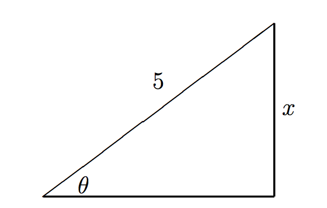

Know (and be able to derive) the derivatives of the 6 elementary trigonometric functions.
Be able to use the product, quotient, and chain rules (where appropriate) to differentiate functions involving trigonometry.
Be able to use the derivative to calculate the instantaneous rates of change of a trigonometric function at a given point.
Be able to use the derivative to calculate the slope of the tangent line to the graph of a trigonometric function at a given point.
Be able to use the derivative to calculate to answer other application questions, such as local max/min, absolute max/min problems, related rates, etc.
Fill in the given table:
| \(f(x)\) | \(f^{\prime}(x)\) |
|---|---|
| \(\sin{x}\) | |
| \(\cos{x}\) | |
| \(\tan{x}\) | |
| \(\cot{x}\) | |
| \(\sec{x}\) | |
| \(\csc{x}\) |
Use the definition of the derivative to show that \(\frac{d}{dx}(\cos{x})=-\sin{x}\)
Use the quotient rule to show that \(\frac{d}{dx}(\cot{x})=-\csc^2{x}\).
Use the quotient rule to show that \(\frac{d}{dx}(\csc{x})=-\csc{x}\cot{x}\).
Evaluate \(\lim_{h \rightarrow 0}{\frac{\tan{\left(\frac{\pi}{3}+h\right)}-\tan{\left(\frac{\pi}{3}\right)}}{h}}\) by interpreting the limit as the derivative of a function at a particular point.
For problems 6-16, differentiate
\(f(x) = 2\cos{x}+4\sin{x}\)
\(f(x) = \frac{\sin^2{x}}{\cos{x}}\)
\(f(x) = x^3\sin{x}\)
\(f(x) = \sec^2{x}+\tan^2{x}\)
\(f(x) = \tan{\left(\frac{1}{x^2}\right)}\)
\(f(x) = \sec{2x}\)
\(f(x) = \cos^3{3x}\)
\(f(x) = \sin {\left(\frac{\pi}{x}\right)}\)
\(f(x) = \sin{(\sin{2x})}\)
\(f(x) = \tan^2{(x^2-1)}\)
\(f(x)=4x^2\csc{5x}\)
Use the following table to calculate \(\left.\frac{d}{dx}\left[g\left(\sqrt{2}\sin{\left(\frac{\pi}{4}x\right)}\right)\right]\right|_{x=3}\)
| \(x\) | \(f(x)\) | \(f^{\prime}(x)\) | \(g(x)\) | \(g^{\prime}(x)\) |
|---|---|---|---|---|
| 1 | \(-2\) | \(-5\) | 3 | 9 |
| 2 | 5 | \(-3\) | 4 | \(-2\) |
| 3 | \(-1\) | 6 | 7 | \(-6\) |
| 4 | 3 | 1 | \(-2\) | 5 |
| 5 | 4 | 7 | 1 | 8 |
What is the 100th derivative of \(y=\sin{(2x)}\)?
Compute an equation of the line which is tangent to the graph of \(f(x)=\frac{\cos{x}}{x}\) at the point where \(x=\pi\).
Find all points on the graph of \(y=\sin^2{x}\) where the tangent lines are parallel to the line \(y=x\).
For problems 21-22, find all values of \(x\) in the interval \([0,2\pi]\) where the graph of the given function has horizontal tangent lines.
\(f(x) = \sin{x}\cos{x}\)
\(g(x) = \csc{x}\)
Let \(f(x)=\sin{x}-\frac{1}{3}x^3\).
Use the Intermediate Value Theorem to show that there is at least one point in the interval \((0,1)\) where the graph of \(f(x)\) will have a horizontal tangent line.
Use Newton’s Method to estimate a value of \(x\) in \((0,1)\) at which \(f(x)\) will have a horizontal tangent line. Initialize your search with \(x_0=1\) and perform two iterations to obtain estimates \(x_1\) and \(x_2\).
Consider the graphs of \(f(x)=\sqrt{2}\cos(x)\) and \(g(x)=\sqrt{2}\sin(x)\) shown below on the interval \(\left[0,\frac{\pi}{2}\right]\).
Show that the graphs of \(f(x)\) and \(g(x)\) intersect at a right angle when \(x=\frac{\pi}{4}\). (Hint: Show that the tangent lines to \(f\) and \(g\) at \(x=\frac{\pi}{4}\) are perpendicular to each other.)
Multiple Choice: At how many points on the interval \([-\pi,\pi]\) is the tangent line to the graph of \(y=2x+\sin{x}\) parallel to the secant line which passes through the graph endpoints of the interval?
0
1
2
3
None of these
Suppose \(f(x) = \sin{(3x)}\). Find all critical points in the interval \((0,\pi)\) and classify each as the location of a local (relative) maximum or a local (relative) minimum.
For problems 27-28, Find all absolute extrema of the given function on the given interval.
\(f(x) = \cos{x}-\sin{x}\) on the interval \([-\pi,\pi]\).
\(f(x) = \tan{x}+\sin{x}\) on the interval \(\left[-\frac{\pi}{4}, \frac{\pi}{4}\right]\).
For problems 29-32, solve the given related rates problem.
A 24 foot plank is leaning against a vertical wall. The bottom of the plank is pushed towards the wall at a constant rate of 3 ft/min. How fast is the acute angle that the plank makes with the ground changing at the instant when the bottom of the plank is 12 ft from the wall? Your answer should include the appropriate units.
Multiple Choice: Consider the triangle shown below.

If \(\theta\) increases at a constant rate of 3 radians per minute, at what rate is \(x\) increasing in units per minute at the instant when \(x\) equals 3 units?
3
\(\frac{15}{4}\)
4
9
12
Two sides of a triangle have fixed lengths of 12 feet and 15 feet, respectively, and the angle between them is increasing at a rate of \(2\) radians per minute. How fast is the length of the third side increasing when the angle between the sides of fixed length is \(\frac{\pi}{3}\) radians? Hint: Consider the law of cosines.
A lighthouse is located on a small island \(2\) km away from the nearest point \(P\) on a straight shoreline. If the light makes 3 revolutions per minute (counterclockwise), how fast is the beam of light moving along the shoreline at the instant when it is 1 km from \(P\)?